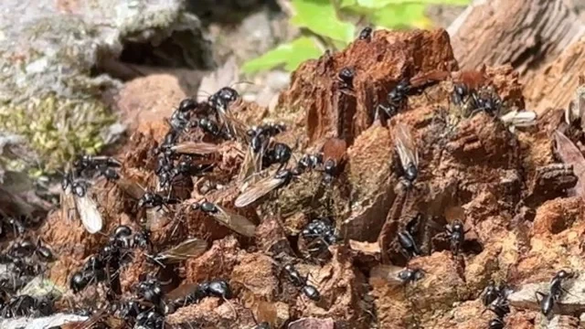
Japanese Carpenter Ant.일본왕개미.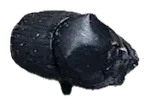
Dung Beetle.소똥구리류.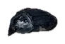
Carrion Beetle.송장벌레류.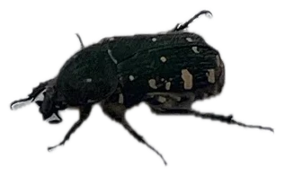
White-spotted Flower Chafer.흰점박이꽃무지.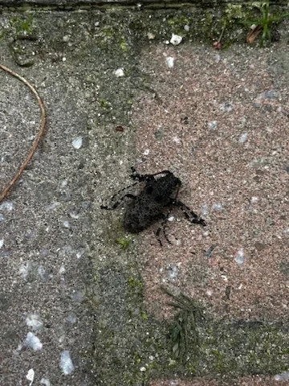
Weevil.바구미류.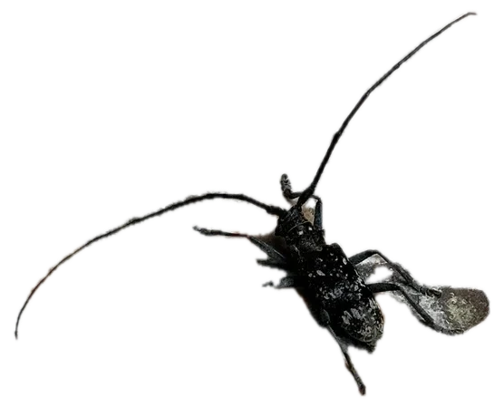
Japanese Pine Sawyer.솔수염하늘소.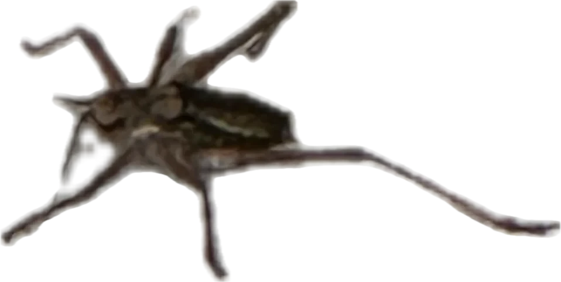
Cricket Nymph.여치 약충.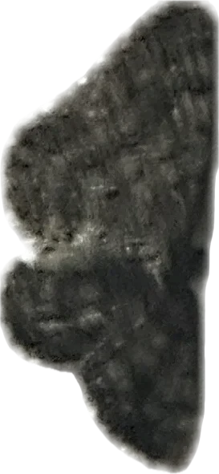
Dark Moth.검은 나방.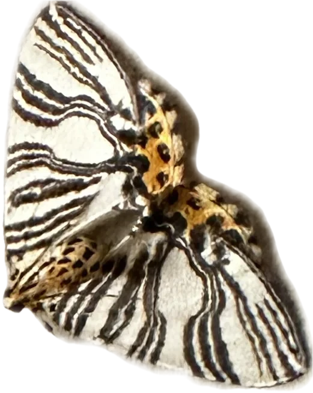
Striped Geometer Moth.줄무늬 가지나방.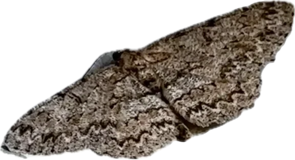
Bark Moth.나무껍질 나방.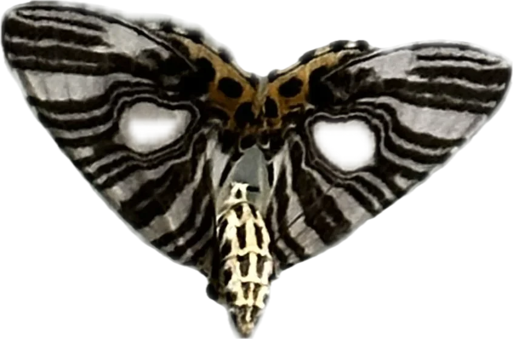
Swallowtail Moth.제비나방.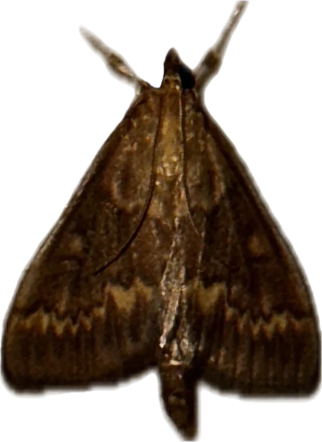
Brown Moth.갈색 밤나방.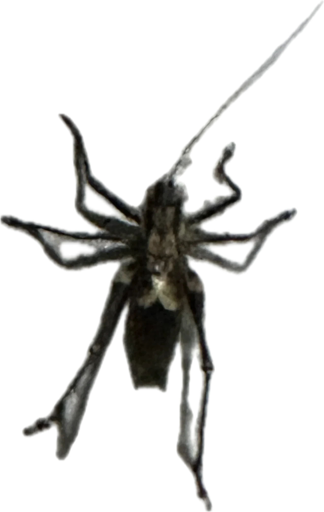
Spider Specimen.거미 표본.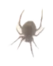
Orb-weaver Spider.집왕거미.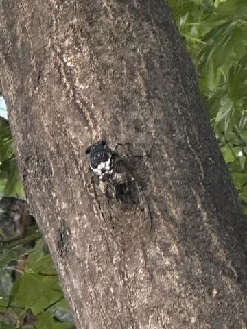
Robust Cicada.참매미.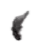
Small Flying Insect.소형 비행곤충.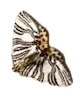
Yellow-bellied Wave Moth.배노랑물결자나방.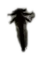
March Fly.털파리류.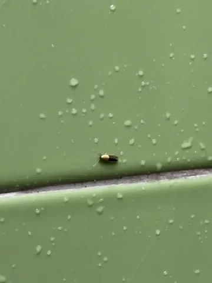
Micro-moth.미소나방류.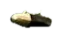
Bicolored Micro Moth.노랑머리좀나방류.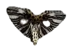
Magpie Moth.알락가지나방류.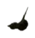
Cobweb Spider.꼬마거미류.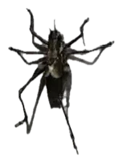
Camel Cricket.꼽등이.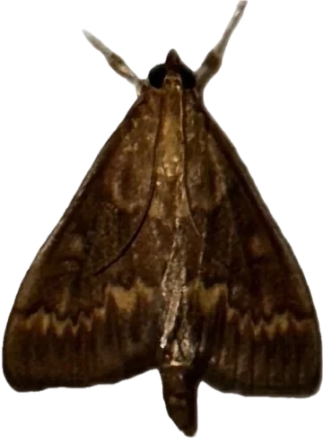
Grass Moth.들명나방류.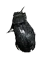
Ground Beetle.먼지벌레류.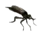
Robber Fly.파리매.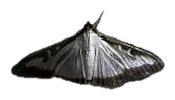
Box Tree Moth.회양목명나방.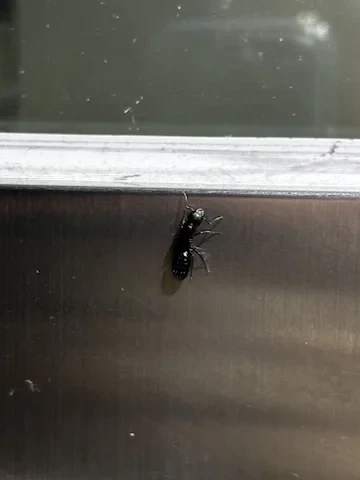
Queen Ant.여왕개미.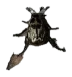
Oriental Beetle.등얼룩풍뎅이.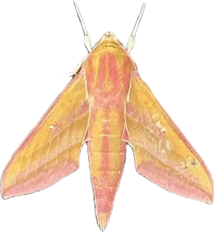
Small Elephant Hawk-moth.주홍박각시.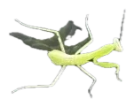
Praying Mantis Nymph.사마귀 약충.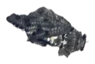
Cicada.애매미.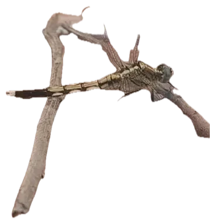
White-tailed Skimmer.밀잠자리.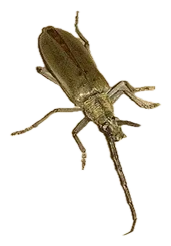
Longhorn Beetle.참나무하늘소.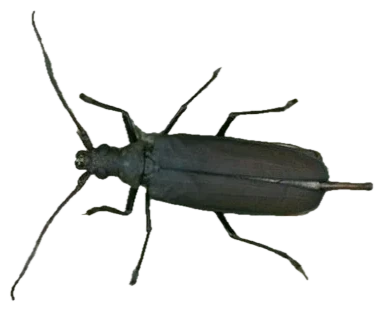
Prionus Longhorn Beetle.톱하늘소.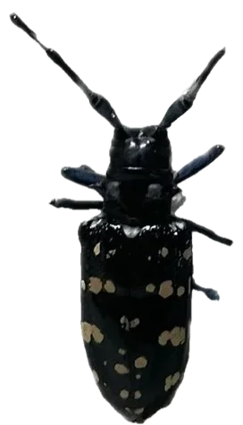
Citrus Long-horned Beetle.알락하늘소.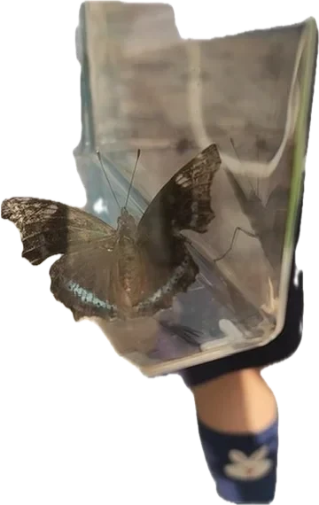
Blue Admiral.청띠신선나비.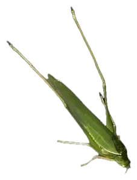
Katydid.베짱이.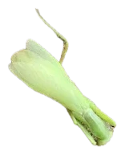
Giant Asian Mantis.넓적배사마귀.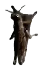
Grasshopper.메뚜기류.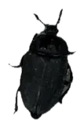
Carrion Beetle.검정송장벌레.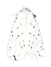
Fall Webworm Moth.미국흰불나방.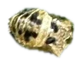
Ladybug Pupa.무당벌레 번데기.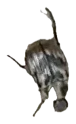
Oriental Beetle.주둥무늬차색풍뎅이.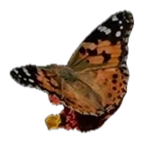
Painted Lady Butterfly.작은멋쟁이나비.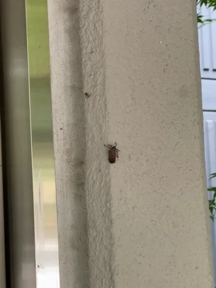
Spotted Lanternfly.꽃매미.
White Geometer Moth.흰애기자나방.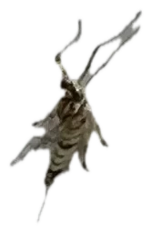
Mayfly.하루살이.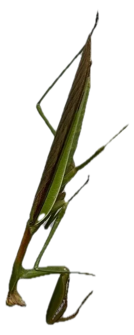
Praying Mantis.왕사마귀.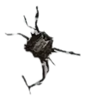
Brown Marmorated Stink Bug Nymph.썩덩나무노린재 약충. Indian Fritillary.암끝검은표범나비. Giant Weevil.왕바구미. Wasp Spider.호랑거미.Some reflective subtext etc. 1:29